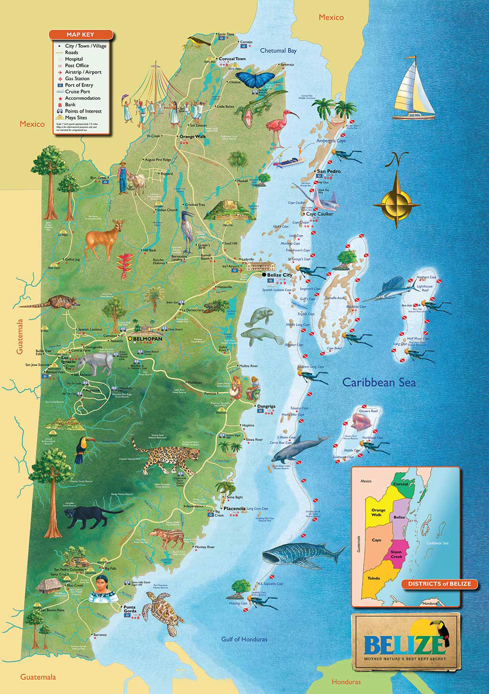

Map of Belize
The country of Belize is in a remarkably interesting location, located in an area that bridges the gap between the Americas and the Caribbean, being the only English-speaking country in Central America. Belize has the advantage of being a tropical paradise in which tourists flock from all regions of the world, making the Belize tourist industry the number one contributor to its economy. The Belize dollar is a powerhouse in the region both in Central America and the Caribbean. The Belize dollar is pegged to the American dollar, 2 to 1, and the American currency is accepted as legal tender. Belize is also a member of the Caribbean Community and Common Market (CARICOM). Belize became an independent nation from Great Britain in 1981 after gaining self-government in 1964. Belize has grown into a culturally varied country since that time. Belize's cultural mosaic has been influenced by a variety of ethnic groups, including Mestizos (people with mixed Maya and European heritage), East Indians, Chinese, and Mennonites, in addition to Maya, Creole, and Garifuna cultures. Belizean food is a fusion of many culinary traditions, including Maya, Caribbean, African, European, and Central American flavours. Rice, beans, plantains, shellfish, poultry, and tropical fruits including papayas and mangoes are typical ingredients. Belizean culture is deeply rooted in music and dance. The vibrant and rhythmic dance form known as "punta," which comes from the Garifuna community, is well-liked across the nation. Belizeans also love other musical genres including soca and “brukdown,” which is a fusion of calypso, reggae, and traditional rhythms.